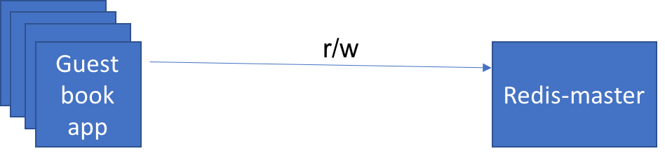
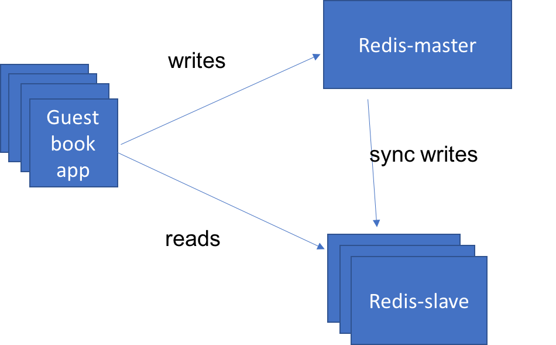

Lab 3: Scale and update apps natively, building multi-tier applications¶
In this lab you'll learn how to deploy the same guestbook application we
deployed in the previous labs, however, instead of using the kubectl
command line helper functions we'll be deploying the application using
configuration files. The configuration file mechanism allows you to have more
fine-grained control over all of resources being created within the
Kubernetes cluster.
Before we work with the application we need to clone a github repo:
git clone https://github.com/IBM/guestbook.git
This repo contains multiple versions of the guestbook application as well as the configuration files we'll use to deploy the pieces of the application.
Change directory by running the command
cd guestbook/v1
You will find all the configurations files for this exercise in this directory.
1. Scale apps natively¶
Kubernetes can deploy an individual pod to run an application but when you
need to scale it to handle a large number of requests a Deployment is the
resource you want to use.
A Deployment manages a collection of similar pods. When you ask for a specific number of replicas
the Kubernetes Deployment Controller will attempt to maintain that number of replicas at all times.
Every Kubernetes object we create should provide two nested object fields
that govern the object’s configuration: the object spec and the object
status. Object spec defines the desired state, and object status
contains Kubernetes system provided information about the actual state of the
resource. As described before, Kubernetes will attempt to reconcile
your desired state with the actual state of the system.
For Object that we create we need to provide the apiVersion you are using
to create the object, kind of the object we are creating and the metadata
about the object such as a name, set of labels and optionally namespace
that this object should belong.
Consider the following deployment configuration for guestbook application
guestbook-deployment.yaml
apiVersion: apps/v1
kind: Deployment
metadata:
name: guestbook-v1
labels:
app: guestbook
version: "1.0"
spec:
replicas: 3
selector:
matchLabels:
app: guestbook
template:
metadata:
labels:
app: guestbook
version: "1.0"
spec:
containers:
- name: guestbook
image: ibmcom/guestbook:v1
ports:
- name: http-server
containerPort: 3000
The above configuration file create a deployment object named 'guestbook'
with a pod containing a single container running the image
ibmcom/guestbook:v1. Also the configuration specifies replicas set to 3
and Kubernetes tries to make sure that at least three active pods are running at
all times.
- Create guestbook deployment
To create a Deployment using this configuration file we use the following command:
kubectl create -f guestbook-deployment.yaml
- List the pod with label app=guestbook
We can then list the pods it created by listing all pods that
have a label of "app" with a value of "guestbook". This matches
the labels defined above in the yaml file in the
spec.template.metadata.labels section.
kubectl get pods -l app=guestbook
When you change the number of replicas in the configuration, Kubernetes will try to add, or remove, pods from the system to match your request. To can make these modifications by using the following command:
kubectl edit deployment guestbook-v1
This will retrieve the latest configuration for the Deployment from the
Kubernetes server and then load it into an editor for you. You'll notice
that there are a lot more fields in this version than the original yaml
file we used. This is because it contains all of the properties about the
Deployment that Kubernetes knows about, not just the ones we chose to
specify when we create it. Also notice that it now contains the status
section mentioned previously.
To exit the vi editor, type :q!, of if you made changes that you want to see reflected, save them using :wq.
You can also edit the deployment file we used to create the Deployment to make changes. You should use the following command to make the change effective when you edit the deployment locally.
kubectl apply -f guestbook-deployment.yaml
This will ask Kubernetes to "diff" our yaml file with the current state of the Deployment and apply just those changes.
We can now define a Service object to expose the deployment to external clients.
guestbook-service.yaml
apiVersion: v1
kind: Service
metadata:
name: guestbook
labels:
app: guestbook
spec:
ports:
- port: 3000
targetPort: http-server
selector:
app: guestbook
type: LoadBalancer
The above configuration creates a Service resource named guestbook. A Service can be used to create a network path for incoming traffic to your running application. In this case, we are setting up a route from port 3000 on the cluster to the "http-server" port on our app, which is port 3000 per the Deployment container spec.
- Let us now create the guestbook service using the same type of command we used when we created the Deployment:
kubectl create -f guestbook-service.yaml
- Test guestbook app using a browser of your choice using the url
<your-cluster-ip>:<node-port>
Remember, to get the nodeport and public-ip use the following commands, replacing $CLUSTER_NAME with the name of your cluster if the environment variable is not already set.
kubectl describe service guestbook
and
kubectl get nodes -o wide
2. Connect to a back-end service¶
If you look at the guestbook source code, under the guestbook/v1/guestbook
directory, you'll notice that it is written to support a variety of data
stores. By default it will keep the log of guestbook entries in memory.
That's ok for testing purposes, but as you get into a more "real" environment
where you scale your application that model will not work because
based on which instance of the application the user is routed to they'll see
very different results.
To solve this we need to have all instances of our app share the same data store - in this case we're going to use a redis database that we deploy to our cluster. This instance of redis will be defined in a similar manner to the guestbook.
redis-master-deployment.yaml
apiVersion: apps/v1
kind: Deployment
metadata:
name: redis-master
labels:
app: redis
role: master
spec:
replicas: 1
selector:
matchLabels:
app: redis
role: master
template:
metadata:
labels:
app: redis
role: master
spec:
containers:
- name: redis-master
image: redis:3.2.9
ports:
- name: redis-server
containerPort: 6379
This yaml creates a redis database in a Deployment named 'redis-master'. It will create a single instance, with replicas set to 1, and the guestbook app instances will connect to it to persist data, as well as read the persisted data back. The image running in the container is 'redis:3.2.9' and exposes the standard redis port 6379.
-
Create a redis Deployment, like we did for guestbook:
kubectl create -f redis-master-deployment.yaml -
Check to see that redis server pod is running:
$ kubectl get pods -lapp=redis,role=master NAME READY STATUS RESTARTS AGE redis-master-q9zg7 1/1 Running 0 2d -
Let us test the redis standalone. Replace the pod name
redis-master-q9zg7with the name of your pod.kubectl exec -it redis-master-q9zg7 redis-cliThe kubectl exec command will start a secondary process in the specified container. In this case we're asking for the "redis-cli" command to be executed in the container named "redis-master-q9zg7". When this process ends the "kubectl exec" command will also exit but the other processes in the container will not be impacted.
Once in the container we can use the "redis-cli" command to make sure the redis database is running properly, or to configure it if needed.
redis-cli> ping PONG redis-cli> exit
Now we need to expose the redis-master Deployment as a Service so that the
guestbook application can connect to it through DNS lookup.
redis-master-service.yaml
apiVersion: v1
kind: Service
metadata:
name: redis-master
labels:
app: redis
role: master
spec:
ports:
- port: 6379
targetPort: redis-server
selector:
app: redis
role: master
This creates a Service object named 'redis-master' and configures it to target port 6379 on the pods selected by the selectors "app=redis" and "role=master".
-
Create the service to access redis master:
kubectl create -f redis-master-service.yaml -
Restart guestbook so that it will find the redis service to use database:
kubectl delete deploy guestbook-v1 kubectl create -f guestbook-deployment.yaml -
Test guestbook app using a browser of your choice using the url
<your-cluster-ip>:<node-port>, or by refreshing the page if you already have the app open in another window.
You can see now that if you open up multiple browsers and refresh the page to access the different copies of guestbook that they all have a consistent state. All instances write to the same backing persistent storage, and all instances read from that storage to display the guestbook entries that have been stored.
We have our simple 3-tier application running but we need to scale the application if traffic increases. Our main bottleneck is that we only have one database server to process each request coming though guestbook. One simple solution is to separate the reads and write such that they go to different databases that are replicated properly to achieve data consistency.

Create a deployment named 'redis-slave' that can talk to redis database to manage data reads. In order to scale the database we use the pattern where we can scale the reads using redis slave deployment which can run several instances to read. Redis slave deployments is configured to run two replicas.

redis-slave-deployment.yaml
apiVersion: apps/v1
kind: Deployment
metadata:
name: redis-slave
labels:
app: redis
role: slave
spec:
replicas: 2
selector:
matchLabels:
app: redis
role: slave
template:
metadata:
labels:
app: redis
role: slave
spec:
containers:
- name: redis-slave
image: ibmcom/guestbook-redis-slave:v2
ports:
- name: redis-server
containerPort: 6379
- Create the pod running redis slave deployment.
kubectl create -f redis-slave-deployment.yaml
- Check if all the slave replicas are running
$ kubectl get pods -lapp=redis,role=slave
NAME READY STATUS RESTARTS AGE
redis-slave-kd7vx 1/1 Running 0 2d
redis-slave-wwcxw 1/1 Running 0 2d
- And then go into one of those pods and look at the database to see
that everything looks right. Replace the pod name
redis-slave-kd7vxwith your own pod name. If you get the back(empty list or set)when you print the keys, go to the guestbook application and add an entry!
$ kubectl exec -it redis-slave-kd7vx redis-cli
127.0.0.1:6379> keys *
1) "guestbook"
127.0.0.1:6379> lrange guestbook 0 10
1) "hello world"
2) "welcome to the Kube workshop"
127.0.0.1:6379> exit
Deploy redis slave service so we can access it by DNS name. Once redeployed,
the application will send "read" operations to the redis-slave pods while
"write" operations will go to the redis-master pods.
redis-slave-service.yaml
apiVersion: v1
kind: Service
metadata:
name: redis-slave
labels:
app: redis
role: slave
spec:
ports:
- port: 6379
targetPort: redis-server
selector:
app: redis
role: slave
-
Create the service to access redis slaves.
kubectl create -f redis-slave-service.yaml -
Restart guestbook so that it will find the slave service to read from.
kubectl delete deploy guestbook-v1 kubectl create -f guestbook-deployment.yaml -
Test guestbook app using a browser of your choice using the url
<your-cluster-ip>:<node-port>, or by refreshing the page if you have the app open in another window.
That's the end of the lab. Now let's clean-up our environment:
kubectl delete -f guestbook-deployment.yaml
kubectl delete -f guestbook-service.yaml
kubectl delete -f redis-slave-service.yaml
kubectl delete -f redis-slave-deployment.yaml
kubectl delete -f redis-master-service.yaml
kubectl delete -f redis-master-deployment.yaml